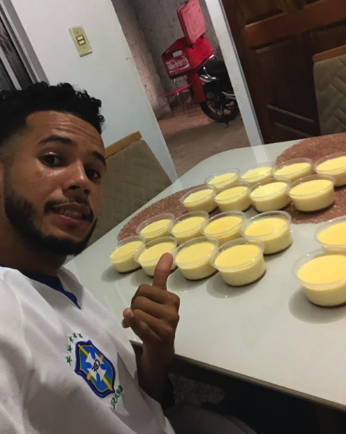
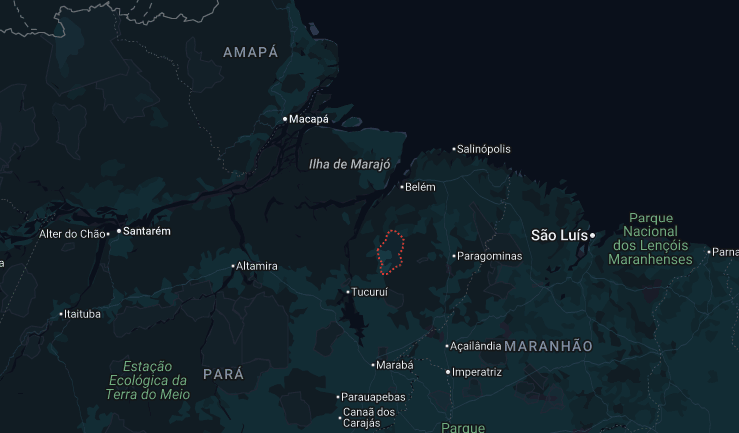
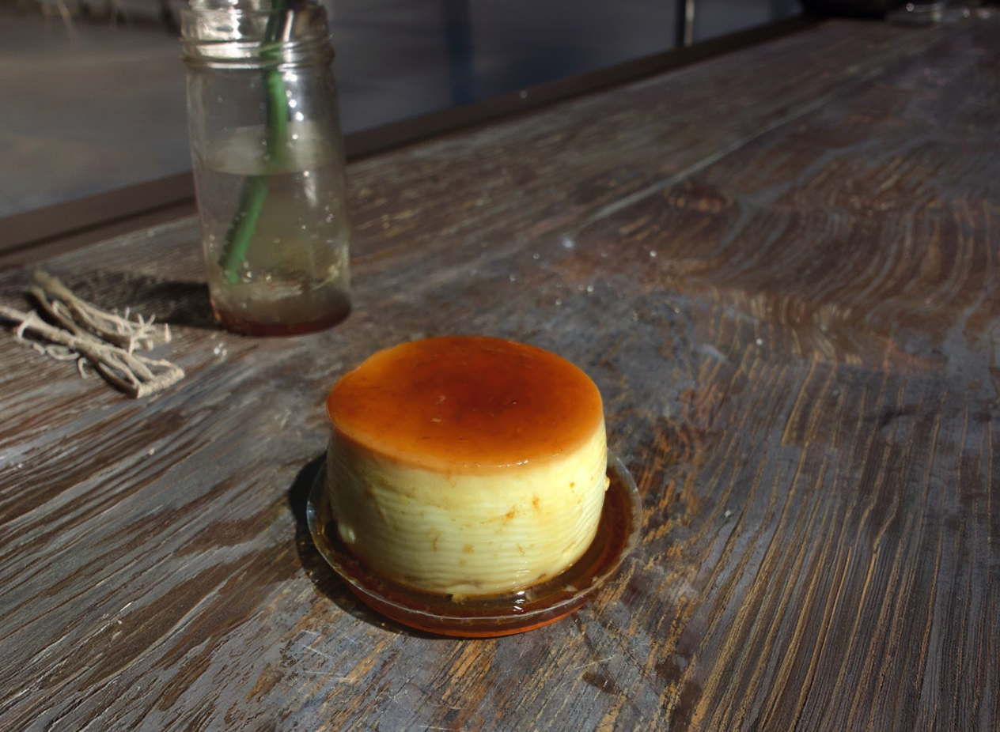
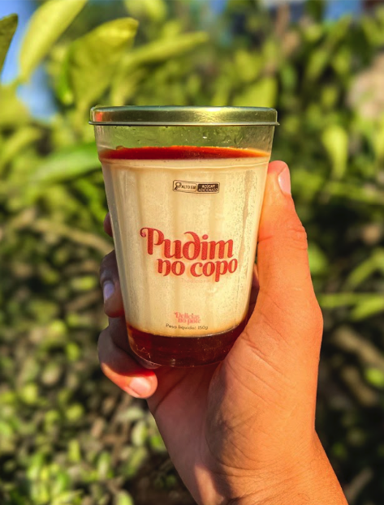
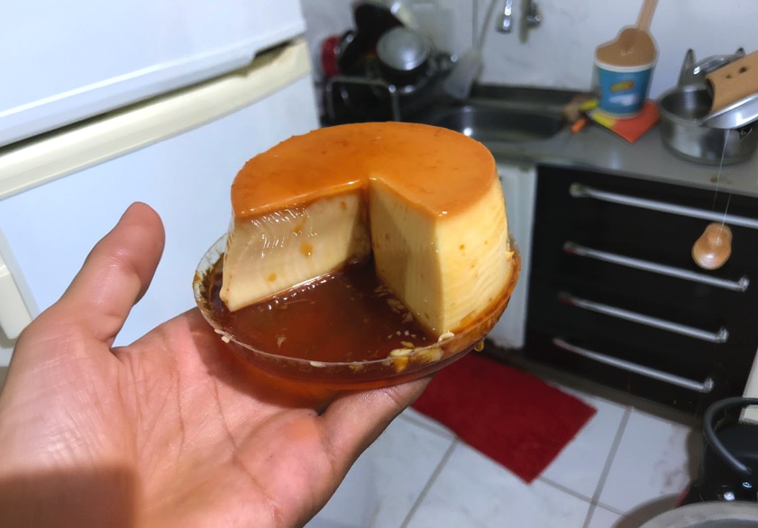
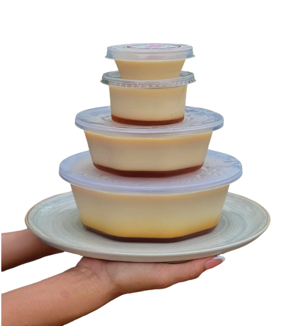
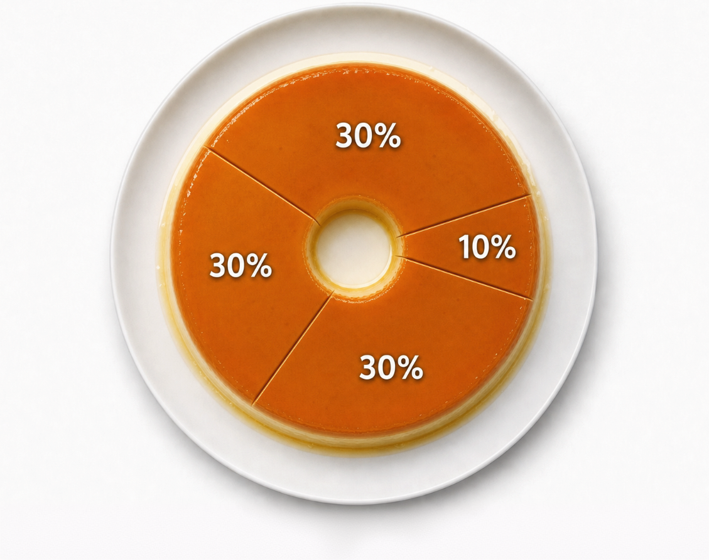

É possível começar
uma empresa com
R$50?
Com organização, paciência e R$50 em ingredientes, receita de pudim se transformou em uma empresa formalizada, com faturamento mensal de dez a doze mil reais

Um rapaz de 21 anos morava com os avós e acumulava dívidas no cartão de crédito quando pesquisou uma receita de pudim, na internet. Investiu cerca de R$ 50 em ingredientes e produziu quinze mini pudins.

Naquela noite, saiu de bicicleta oferecendo os doces para pessoas na cidade de Tailândia (PA) e voltou para casa sem nenhuma unidade. "Fiquei até triste por não ter feito mais", lembra.

Hoje, Guilherme da Silva Castro fatura entre R$ 10 mil a R$ 12 mil por mês, tem 6 funcionários e 4 fontes de renda diferentes com a GuiPudim.
Quando uma história como essa aparece nas redes sociais, o destaque costuma ficar no baixo investimento inicial. O que quase nunca aparece é o que vem depois da primeira venda.
Mas é essa segunda parte aqui que decide se o negócio sobrevive:
- Identificar demanda ✅
- Aprender a produzir ✅
- Controlar custos ✅
- Organizar a operação ✅
- Precificar corretamente ✅
- Atender clientes ✅
- Encontrar novas formas de vender ✅

Na prática, o que Guilherme fez foi validar sua ideia de negócio antes de investir em equipamentos ou estrutura. Essa é justamente uma das recomendações mais frequentes do Sebrae para quem está começando: testar o mercado em pequena escala antes de ampliar os investimentos.
Um erro muito comum
O crescimento inicial trouxe também o primeiro grande prejuízo. Pensando em participar e faturar em um evento da cidade, Guilherme preparou cinquenta minipudins. Mas a calda deu errado, metade da produção não foi vendida e precisou ser descartada. "Foram quase dez dias trabalhando apenas para recuperar aquele prejuízo", conta.
O episódio ensinou uma lição: aumentar a produção sem dominar completamente o processo aumenta o risco financeiro.
Depois vieram outros aprendizados para continuar seguindo a diante.
Cinco passos antes de transformar um produto em negócio:
- 1Definir quem decide cada assunto
- 2Registrar responsabilidades
- 3Estabelecer metas em comum
- 4Reuniões periódicas de alinhamento
- 5Acompanhar vendas, custos
e resultados
Conhecimento é o investimento com maior retorno
Durante muito tempo, Guilherme acreditou que fazer cursos seria um gasto desnecessário, mas hoje ele pensa exatamente o contrário. Depois de investir em capacitação, profissionalizou a produção, passou a calcular melhor seus custos e utilizou o lucro para comprar forno industrial, freezer, geladeiras e novos equipamentos.
Nada veio de empréstimos, tudo foi comprado com recursos gerados pelo próprio negócio.
"Se eu tivesse investido em conhecimento antes, teria evoluído muito mais rápido", revela.
O Sebrae destaca:
investir em capacitação ajuda pequenos empreendedores a melhorar processos, reduzir desperdícios, precificar corretamente e aumentar a produtividade.
Fonte: Portal de Capacitação e Gestão para Pequenos Negócios, Sebrae
E os números comprovam:

2024
- R$ 50Definir quem decide cada assunto
- 15Minipudins
- R$ 3.000em vendas
- 1produto
2026
- 2 mil a 2.500pudins vendidos por mês
- 10 mil a 12 mil/mês de faturamento
- 6funcionários
- 4fontes de renda

Outra lição aprendida da prática: um único produto pode gerar várias empresas
Depois de alguns meses, Guilherme percebeu que vender apenas minipudins não sustentaria o negócio. Além da versão pequena, passou a fazer o pudim em tamanho tradicional, em outros sabores e na proposta de pudim no copo. Ampliou as vendas para comércios da região e abriu delivery.
Um vídeo mostrando um picolé de pudim no perfil do GuiPudim ultrapassou 10 milhões de visualizações. Com isso, vieram seguidores, novos clientes e a ideia de montar um curso mostrando como fazer o produto.
Fonte de faturamento atual:

Vendas na rua delivery estabelecimentos cursos e mentoriasContinuar crescendo
Guilherme chegou mais longe do que ele mesmo esperava! Hoje a operação envolve a esposa, a mãe, o avô, a prima e outros colaboradores de fora da família. Enquanto eles atuam na produção e nas vendas, Guilherme dedica boa parte do tempo à gestão, ao marketing, ao planejamento e aos estudos.
Também deixou a informalidade para trás: abriu MEI, migrou para Microempresa e já planeja cursar Gastronomia para ampliar suas possibilidades de atuação.